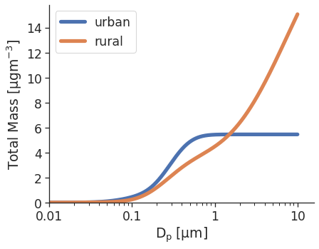

Cumulative Mass Loading for Various Distributions¶
Python source code: [download source: cumulative_mass.py]
import seaborn as sns
import opcsim
sns.set(style='ticks', font_scale=1.5)
# Load the example urban distribution
urban = opcsim.load_distribution("Urban")
rural = opcsim.load_distribution("Rural")
# Plot the mass-weighted cdf [urban]
ax = opcsim.plots.cdfplot(urban, weight='mass')
# Plot the mass-weighted cdf [rural]
ax = opcsim.plots.cdfplot(rural, weight='mass', ax=ax)
# Add a legend
ax.legend(loc='best')
# Set the x and y-axis limits
ax.set_ylim(0, None)
ax.set_xlim(.01, None)
# Remove the top and right spines
sns.despine()